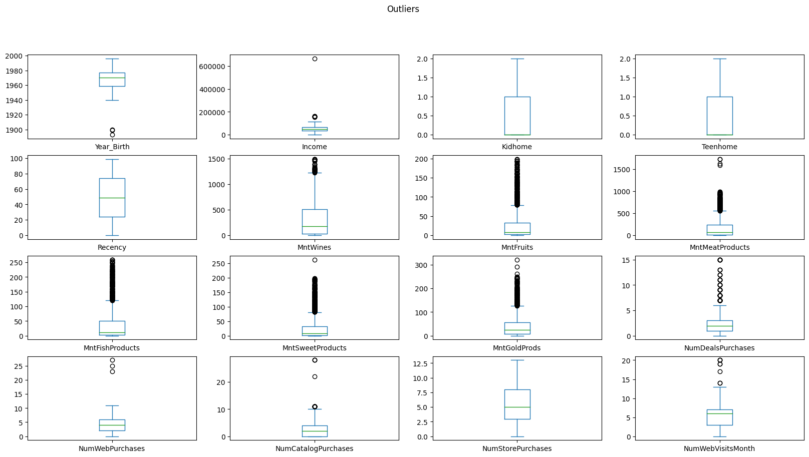

Analyzing a marketing campaign
using Python
Project Summary
Click here to access full of my project on my Github- Input: Dataset about Marketing campaign
- Goal:
- Identify what is the most effective marketing campaign
- Identify customers who bring the most value
- The most significant factor influence the store purchases
- Insight:
- Customers having high AOV (average order value) tend to
- not have many kids
- not visit website
- buy through catalog and store
- buy high amount of meat and wines
- high income
- Total amount is the most influenced factor on the number of store purchases.
- The remaining customers had more fish purchases on average than the Married PhD group.
- The last campaign is the most successful.
- Catalog is the most underperforming channel.
- Customers having high AOV (average order value) tend to
- Project Duration
- Assessing and Cleaning data: Checking null values and data type
- Exploratory Data Analysis
- Are there any outliers? How will you wrangle/handle them?
- Are there any useful variables that you can engineer with the given data?
- Statistical Analysis
- What factors are significantly related to the number of store purchases?
- Fish has Omega 3 fatty acids which are good for the brain. - Accordingly, do "Married PhD candidates" have a significant relation with the amount spent on fish?
- Further Analysis
- Which marketing campaign is most successful and unsuccessful?
- Which channels are underperforming?
Context: Assuming that I've been told by the Chief Marketing Officer that recent marketing campaigns have not been as effective as they were expected to be. I need to analyze the data set to understand this problem and figure out useful insights.
Database Description
Meaning of some fields:
- Dt_Customer: Date of customer's enrollment with the company
- MntWines: Amount spent on wine in the last 2 years
- NumWebPurchase: Number of purchases made through the company's web site
- AcceptedCmp3: 1 if customer accepted the offer in the 3rd campaign, 0 otherwise
- Complain: 1 if customer complained in the last 2 years, 0 otherwise
- Respones: 1 if customer accepted the offer in the last campaign, 0 otherwise
- Assessing and Cleaning data
- Checking null values: There is no null value in the dataset
- Checking data type (change data type if necessary)
Income is object type. Solution: Change it to int type:df1['Income']=df1['Income'].astype(int) df1.info()
Data type of Dt_Customer is object. Solution: change it to datetimedf1['Dt_Customer']=pd.to_datetime(df1['Dt_Customer']) df1['Dt_Customer'].info()
Column 'Income' has two blank spaces. Solution: change the column name:df1.rename(columns={' Income ':'Income'},inplace=True) df1.columns
- Exploratory Data Analysis
- Are there any outliers? How will you wrangle/handle them?
- Are there any useful variables that you can engineer with the given data?
I will remove outliers of Year Birth because they seem to be error because it is impossible for someone who was born in 1900 still alive.
I will create more useful variables
- Joint date, month and year of Dt_customer (for determine which time people choose to become customer)
- Total amount
- Total purchase
- AOV
- Total kids in familynew_df['Join_week']=new_df['Dt_Customer'].dt.weekday new_df['Join_month']=new_df['Dt_Customer'].dt.month new_df['Join_year']=new_df['Dt_Customer'].dt.year new_df['Total_amount']=new_df['MntFishProducts']+new_df['MntWines']+new_df['MntMeatProducts']+new_df['MntSweetProducts']+new_df['MntGoldProds']+new_df['MntFruits'] new_df['Total_purchase']=new_df['NumDealsPurchases']+new_df['NumWebPurchases']+new_df['NumStorePurchases']+new_df['NumWebVisitsMonth']+new_df['NumCatalogPurchases'] new_df['Total_kids']=new_df['Kidhome']+new_df['Teenhome'] new_df['AOV']=new_df['Total_amount']/new_df['Total_purchase'] - What are characteristics of customers having high income, high AOV and having kids?
- People having high income: not buy frequently (low recency), buy wines and meats (high amount), not visit web frequently.
- People having kids tend to: buy low amount of food, low AOV, buy with deals, visit websites frequently.
- People having high AOV tend to: not have many kids, not visit website, buy through catalog and store, buy high amount of meat and wines, high income.
- What factors are significantly related to the number of store purchases? I use the importance score of the Random Forest model to find out which factors are the most significant to the number of store purchases.
Prepare the dataset for the model by replace string value by numeric value using get_dummies
# What factors are significantly related to the number of store purchases?
# use random forest to predict then use importance score
#--create new dataframe to run random forest model (this is a model with high accuracy and both classification and regression)
rd_df=new_df.drop(columns=['ID','Dt_Customer'])
#--replace infinity values (if any) to the value 0
rd_df.replace([np.inf,-np.inf],0,inplace=True)
#--convert a string column to a number (one-hot coding) with get_dummies
rd_df=pd.get_dummies(rd_df)
rd_df.head()
#--import split train test function
from sklearn.model_selection import train_test_split
#--tạo dataframe train test theo chiều ngang
X=rd_df.drop(columns=['NumStorePurchases'])
y=rd_df['NumStorePurchases']
#split train test dataset
X_train, X_test, y_train, y_test=train_test_split(X, y,test_size=0.3)
#import random forest regressor
from sklearn.ensemble import RandomForestRegressor
#--create forest having 100 trees
rg = RandomForestRegressor(n_estimators=200, n_jobs=-1)
#--train the model
rg.fit(X_train, y_train)
#--test the model
y_pred=rg.predict(X_test)
# use t-test to test if these two groups have the same mean
from scipy.stats import ttest_ind
#This is a two-sided test for the null hypothesis that 2 independent samples have identical average (expected) values.
#This test assumes that the populations have identical variances by default.
pval = ttest_ind(married_phd.MntFishProducts, the_rest.MntFishProducts).pvalue
print("T-test p-value: ", pval)- H1: u1 >< u2
- If p-value < 0.05, we reject hypothesis H0, otherwise we will accept hypothesis H0.
- According to the above results, p-value=0.005 -> reject the hypothesis H0, which is 2 unequal averages (based on the chart to know which side is bigger) The remaining group of customers had more fish purchases on average than the Married PhD group.
- Which marketing campaign is most successful? We will use the number of acceptances to evaluate the effectiveness of each campaign
new_df[["AcceptedCmp1", "AcceptedCmp2","AcceptedCmp3","AcceptedCmp4","AcceptedCmp5","Response"]].sum().sort_values().plot.barh()
plt.title("Which marketing campaign is most successful?")
plt.xlabel("Offer Accepted");
plt.ylabel("Campaign")Here the full code and dataset I used
Click here